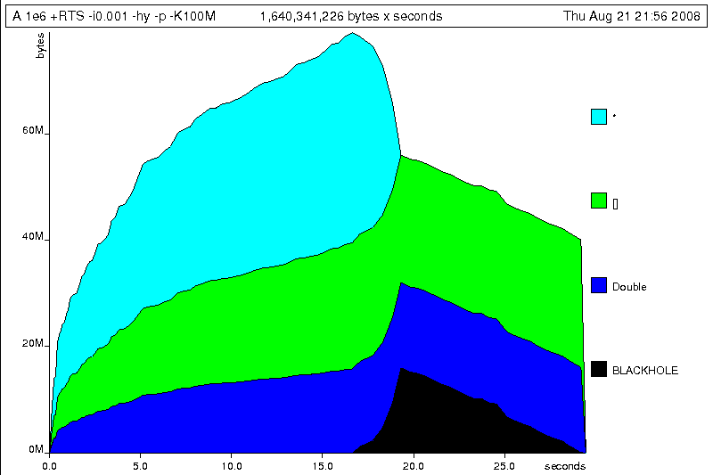

第 25 章：性能剖析与优化¶
Haskell 是一门高级编程语言，一门真正的高级编程语言。 我们可以一直使用抽象概念、 幺半群、函子、以及多态进行编程，而不必与任何特定的硬件模型打交道。 Haskell 在语言规范方面下了很大的功夫，力求语言可以不受制于某个特定的求值模型。 这几层抽象使得我们可以把 Haskell 作为计算本身的记号， 让编程人员关心他们问题的关键点，而不用操心低层次的实现细节， 使得人们可以心无旁骛地进行编程。
但是，本书介绍的是真实世界中的编程行为，而真实世界中的代码都运行在资源有限的硬件之上， 并且程序也会有时间和空间上的限制。 因此，我们需要掌握好程序数据的底层结构，准确地理解使用惰性求值和严格求值策略带来的后果， 并学会如何分析和控制程序在时间和空间上的行为。
在这一章，我们将会去看一些 Haskell 编程中常见的空间和时间问题，并且学习如何对它们进行有条理地分析， 最后理解并解决它们。 为此我们将研究使用一系列的技术：时间和空间性能剖析，运行时统计，以及对严格求值和惰性求值进行推断。 我们也会看下编译器优化对性能的影响，以及在纯函数式编程语言中可行的高级优化技术的应用。 那么，让我们用一个挑战开始吧：调查一个看似无害的程序中出乎意料的内存使用的问题。
Haskell 程序性能剖析¶
请看下面这个列表处理程序，它用于计算某个超长列表的平均值。 这里展示的只是程序的其中一部分代码（并且具体的实现算法我们并不关心）， 这是我们经常会在真实的 Haskell 程序中看到的典型的简单列表操作代码， 这些代码大量地使用标准库函数，并且包含了一些因为疏忽大意而导致的性能问题。 这里也展示了几种因疏忽而易出现的性能问题。
-- file: ch25/A.hs
import System.Environment
import Text.Printf
main = do
[d] <- map read `fmap` getArgs
printf "%f\n" (mean [1..d])
mean :: [Double] -> Double
mean xs = sum xs / fromIntegral (length xs)
这个程序非常简单：我们引用了访问系统环境的函数（即 getArgs ），
和 Haskell 版的 printf 函数来格式化输出。接着这个程序从命令行
读入一个数字来构建一个由浮点数组成的列表。我们用这个列表的和除以列表的
长度得到平均值，然后以字符串的形式打印出来。我们来将此代码编译成机器代码（打开优化开关）
然后用 time 命令执行它看看情况吧：
$ ghc --make -rtsopts -O2 A.hs
[1 of 1] Compiling Main ( A.hs, A.o )
Linking A ...
$ time ./A 1e5
50000.5
./A 1e5 0.05s user 0.01s system 102% cpu 0.059 total
$ time ./A 1e6
500000.5
./A 1e6 0.26s user 0.04s system 99% cpu 0.298 total
$ time ./A 1e7
5000000.5
./A 1e7 63.80s user 0.62s system 99% cpu 1:04.53 total
程序在处理少量元素时运行得非常好，但是当输入的列表元素数量达到一千万个时， 程序的运行速度就会变得相当缓慢。从这点我们就能感觉到应该有什么地方做得不对， 但我们并不清楚它的资源使用情况。 我们需要研究下。
收集运行时统计信息¶
为了获得这些信息，GHC 支持直接向 Haskell 运行时传入一些标志(flags)，如 +RTS 和 -RTS。 这些特殊的标志是传递给 Haskell 的运行时系统的保留参数，会直接被运行时系统处理掉。 而应用程序本身并不会看到这些标志。
特别地，我们可以用 -s 标志来让运行时系统收集内存和垃圾收集器(garbage collector，
以下也会用 GC 来简称)的性能参数
（并可以用 -N 来控制系统线程的数量，或调整栈和堆的大小）。
我们将用各种运行时标志来启动不同的性能剖析。
Haskell 运行时能够接受的所有标志列表可以参见 GHC 用户手册。
那么让我们用 +RTS -sstderr 来运行程序取得我们所需要的结果吧。
$ ./A 1e7 +RTS -sstderr
5000000.5
1,689,133,824 bytes allocated in the heap
697,882,192 bytes copied during GC (scavenged)
465,051,008 bytes copied during GC (not scavenged)
382,705,664 bytes maximum residency (10 sample(s))
3222 collections in generation 0 ( 0.91s)
10 collections in generation 1 ( 18.69s)
742 Mb total memory in use
INIT time 0.00s ( 0.00s elapsed)
MUT time 0.63s ( 0.71s elapsed)
GC time 19.60s ( 20.73s elapsed)
EXIT time 0.00s ( 0.00s elapsed)
Total time 20.23s ( 21.44s elapsed)
%GC time 96.9% (96.7% elapsed)
Alloc rate 2,681,318,018 bytes per MUT second
Productivity 3.1% of total user, 2.9% of total elapsed
当使用 -sstderr 时，程序的性能数字会输出到标准错误流里，告诉我们很多关于程序
在具体做什么的信息。尤其是，它告诉了我们 GC 占用了多少时间，以及最大活动内存的使用情况。
原来，为了计算一千万个元素的平均值，程序在堆上使用了多达 742M 的内存，并且 96.9% 的时间是
花费到垃圾收集器上的！总的来说，只有 3.1% 的时间是程序用来干正事的。
那么为什么我们的程序运行情况这么差？我们如何来提高它呢？毕竟，Haskell 是一个惰性语言： 它不应该只用恒定的内存空间来处理列表吗？
时间剖析¶
幸运的是，GHC 为我们提供了多种工具来剖析程序的时间和空间使用情况。 我们可以在编译程序时打开性能剖析标志，这样程序在执行时会生成每个函数的资源使用信息。 性能剖析可以按照下面三个步骤来进行： 用性能剖析标志编译程序；执行程序时用运行时标志打开特定的性能剖析模式；最后分析收集到的统计信息。
编译程序时，我们可以使用 -prof 性能剖析标志来得到基本的时间和空间消耗信息。
我们也需要给感兴趣的函数标记为“消耗集中点(cost centres)”以便让性能剖析程序知晓。
一个消耗集中点即是一个信息收集点，GHC 会生成代码来计算在这些地方执行的表达式的消耗情况。
我们可以用 SCC 编译指示(pragma)把任何表达式设为消耗集中点。
-- file: ch25/SCC.hs
mean :: [Double] -> Double
mean xs = {-# SCC "mean" #-} sum xs / fromIntegral (length xs)
或者，我们也可以用 -auto-all 标志来让编译器将所有顶层函数设为消耗集中点。
然后在我们识别出某个性能热点(hot spot)的函数之后，把手动添加消耗集中点作为一个十分有用的补充，
就可以更为精确地去侦测该函数的子表达式了。
需要注意的一个复杂的地方：在 Haskell 这类惰性、纯函数式编程语言里，
没有参数的值只会被计算一次（比如之前计算超长列表的程序），然后计算的结果会在之后共享。
于是这种函数在调用关系图(call graph)中记录的统计值并不准确，因为它们并不是每次调用都执行。
然而，我们仍然想要知道它们一次执行的消耗情况是怎么样。
为了得到这种被称为“常量函数体(Constant Applicative Forms)”或 CAF 的确切值，
我们可以使用 -caf-all 标志。
那么以性能剖析的方式来编译我们的程序吧（用 -fforce-recomp 标志来强制重新编译所有部分）：
$ ghc -O2 --make A.hs -prof -auto-all -caf-all -fforce-recomp
[1 of 1] Compiling Main ( A.hs, A.o )
Linking A ...
现在我们可以执行这个标记了性能剖析点的程序了 （标记了性能剖析的程序会 变慢，所以我们用一个较小的输入来执行）：
$ time ./A 1e6 +RTS -p
Stack space overflow: current size 8388608 bytes.
Use `+RTS -Ksize' to increase it.
./A 1e6 +RTS -p 1.11s user 0.15s system 95% cpu 1.319 total
程序竟然把栈空间耗完了！这就是使用性能剖析时需要注意的主要影响：
给程序加消耗集中点会改变它的优化方式，进而可能影响它的运行时表现，
因为每一个被标记的表达式都会被附加一段额外的代码，以此来跟踪它们的执行轨迹。
从某种意义上说，观察程序执行会影响它的执行。
对于我们这样情况，修正起来很简单——只需要通过 GHC 运行时标志 -K 来增加
栈空间上限即可（要附带指示存储单位的后缀）：
$ time ./A 1e6 +RTS -p -K100M
500000.5
./A 1e6 +RTS -p -K100M 4.27s user 0.20s system 99% cpu 4.489 total
运行时会将性能信息生成到一个名字为 ``A.prof``（以可执行程序的名字命名）的文件中。 其中含有以下信息：
$ cat A.prof
Time and Allocation Profiling Report (Final)
A +RTS -p -K100M -RTS 1e6
total time = 0.28 secs (14 ticks @ 20 ms)
total alloc = 224,041,656 bytes (excludes profiling overheads)
COST CENTRE MODULE %time %alloc
CAF:sum Main 78.6 25.0
CAF GHC.Float 21.4 75.0
individual inherited
COST CENTRE MODULE no. entries %time %alloc %time %alloc
MAIN MAIN 1 0 0.0 0.0 100.0 100.0
main Main 166 2 0.0 0.0 0.0 0.0
mean Main 168 1 0.0 0.0 0.0 0.0
CAF:sum Main 160 1 78.6 25.0 78.6 25.0
CAF:lvl Main 158 1 0.0 0.0 0.0 0.0
main Main 167 0 0.0 0.0 0.0 0.0
CAF Numeric 136 1 0.0 0.0 0.0 0.0
CAF Text.Read.Lex 135 9 0.0 0.0 0.0 0.0
CAF GHC.Read 130 1 0.0 0.0 0.0 0.0
CAF GHC.Float 129 1 21.4 75.0 21.4 75.0
CAF GHC.Handle 110 4 0.0 0.0 0.0 0.0
这些信息给我们描述了程序在运行时的行为。里面包含了程序的名字以及 执行程序时用到的标志和参数。“total time”是运行时系统视角所见的程序运行 的确切总时长。“total alloc”是程序在运行过程中分配的内存总字节数（不是 程序运行时内存使用的峰值；那个峰值大概是 700MB）
报告中的第二段是各个函数所消耗的时间和空间部分。
第三段是消耗集中点的报告，它被组织成了调用关系图的格式
（比如，我们可以看出 mean 是被 main 调用的）。
“individual”和“inherited”列提供了每个消耗集中点其本身、以及它和它的子部分
所消耗的资源。此外，最下面那些 CAF 是常量执行的一次性消耗（例如超长列表中
浮点数以及列表本身）。
我们能从这些信息得出什么结论呢？我们可以看出两个 CAF 占用了大多数时间：
一个与计算总和相关，另一个与浮点数相关。
光是它们就几乎占据了程序运行期间的所有消耗。
结合我们之前观察到 GC 的压力问题，看起来像是在列表节点的内存分配和浮点数值上发生了问题。
简单的性能热点检测，特别是对于我们难以知道时间花费点的大型程序， 这个时间剖析会突出某些问题模块或顶层函数。这往往已足够显示出问题所在了。 跟上面展示的程序一样，一旦我们缩小了问题代码的范围，我们就可以用更加尖端的剖析工具来拿到更多的信息。
空间剖析¶
GHC 除了可以进行基本的时间和空间统计外，还能为程序整个执行期间的堆内存使用 情况生成图表。这能完美检测内存泄露问题。内存泄露是指不再需要的内存没有被释放。 这会对 GC 造成压力，就像在我们的程序中见到的那样。
构建堆内存剖析和构建一般的时间剖析的步骤是一样的，
都需要用到 -prof -auto-all -caf-all 编译标志。 但当执行程序时，
我们会让运行时系统收集关于堆使用的最多细节。堆使用信息能够以几种方式分解：
消耗集中点、模块、构造器和数据类型。每个都有各自的洞见。
对 A.hs 进行堆内存剖析所得的原始数据会被记录到一个名为 A.hp 的文件里面，
之后只要使用 hp2ps 处理这个文件，
就可以得到一个堆内存占用历史图像的 PostScript 文件。
想要使用标准的堆内存剖析的话，可以在运行程序时使用 -hc 作为运行时的性能剖析标志：
$ time ./A 1e6 +RTS -hc -p -K100M
500000.5
./A 1e6 +RTS -hc -p -K100M 4.15s user 0.27s system 99% cpu 4.432 total
一个堆内存剖析的日志文件 A.hp 会创建出来，其内容为以下形式：
JOB "A 1e6 +RTS -hc -p -K100M"
SAMPLE_UNIT "seconds"
VALUE_UNIT "bytes"
BEGIN_SAMPLE 0.00
END_SAMPLE 0.00
BEGIN_SAMPLE 0.24
(167)main/CAF:lvl 48
(136)Numeric.CAF 112
(166)main 8384
(110)GHC.Handle.CAF 8480
(160)CAF:sum 10562000
(129)GHC.Float.CAF 10562080
END_SAMPLE 0.24
这些样本是在程序运行期间以固定的间隔采样出来的。
我们可以用 -iN 标志来增加采样频率，
这里的 N 是内存采样之间相隔的秒数（如 0.01 秒）。
很明显，采样越频繁，得到的结果越精确，但程序也会执行得越慢。
我们可以用 hp2ps 将剖析结果生成一张图表：
$ hp2ps -e8in -c A.hp
这就是生成的图表 A.ps ：

我们能从图片中看出什么？举个例子，程序的执行分为两个阶段：
前一阶段在计算数值总和的同时不断分配大量的内存，后一阶段清理释放这些内存。
内存初始化分配的同时， sum 也开始工作，并消耗大量的内存。
如果用性能剖析标志 -hy 来按类型分解的话，我们会得到一个稍有不同的图像：
$ time ./A 1e6 +RTS -hy -p -K100M
500000.5
./A 1e6 +RTS -i0.001 -hy -p -K100M 34.96s user 0.22s system 99% cpu 35.237 total
$ hp2ps -e8in -c A.hp
以下是生成的图像：
这里最有趣的是很大部分的内存都被 list 类型（即“[]”）和 Double 类型所占用；
我们看到未知类型（图中用“*”标记）也占用了一些内存。
最后，再让我们用 -hd 标志，根据构造器对结果进行分解：
$ time ./A 1e6 +RTS -hd -p -K100M
$ time ./A 1e6 +RTS -i0.001 -hd -p -K100M
500000.5
./A 1e6 +RTS -i0.001 -hd -p -K100M 27.85s user 0.31s system 99% cpu 28.222 total
下面就是能够展示程序执行的所有情况的最终图像：

程序在分配双精度浮点数列表上面花了不少功夫。列表在 Haskell 语言中是惰性的，
所以含有上百万个元素的列表都是在程序执行过程中一点点地构建出来的。
但这些元素在被遍历的同时并没有被逐步释放，所以导致内存占用变得越来越大。
最终，在程序执行稍稍超过一半时，终于将列表总和计算出来，并开始计算其长度。
如果看下关于 mean 的程序片断的话，我们就会知道内存没被释放的确切原因：
-- file: ch25/Fragment.hs
mean :: [Double] -> Double
mean xs = sum xs / fromIntegral (length xs)
首先我们计算列表的总和，这会使得所有列表元素被分配到内存。
但我们现在还不能释放列表元素，因为 length 还需要整个列表。
一旦 sum 结束， length 会马上开始访问列表，同时 GC 会跟进，
逐步释放列表元素，直到 length 结束。
这两个计算阶段展示了两种明显不同的分配与释放，并指出我们需要改进的确切思路：
只对列表遍历一次，遍历过程中同时计算总和与平均值。
控制求值¶
如果我们有很多方式来实现一个只遍历一次的循环。 例如，我们可以写一个对列表折叠(fold)的循环，也可以对列表进行显式的递归。 本着使用更高级的方法去解决问题的原则，我们决定先尝试折叠的方式：
-- file: ch25/B.hs
mean :: [Double] -> Double
mean xs = s / fromIntegral n
where
(n, s) = foldl k (0, 0) xs
k (n, s) x = (n+1, s+x)
这次，我们不再采取“计算列表的总和，并保留这个列表直到获取它的长度为止”这一方案， 而是左折叠(left-fold)整个列表，累加当前的总和及长度到 pair(对组)上 （我们必须采用左折叠，因为右折叠(right-fold)会先带我们到列表的结尾，然后倒回来计算， 这恰恰是我们想要避免的）。
循环的主体是 k 函数，把即时的循环状态和当前的列表元素作为参数，然后返回新状态——长度增一、总和加当前元素。然而，当我们运行它时发生了栈溢出：
$ ghc -O2 --make B.hs -fforce-recomp
$ time ./B 1e6
Stack space overflow: current size 8388608 bytes.
Use `+RTS -Ksize' to increase it.
./B 1e6 0.44s user 0.10s system 96% cpu 0.565 total
我们把堆消耗换成栈消耗了！
事实上，如果我们用 -K 标志增加栈的大小到前面堆的大小，程序就能够运行完成，
并生成相似的内存分配图：
$ ghc -O2 --make B.hs -prof -auto-all -caf-all -fforce-recomp
[1 of 1] Compiling Main ( B.hs, B.o )
Linking B ...
$ time ./B 1e6 +RTS -i0.001 -hc -p -K100M
500000.5
./B 1e6 +RTS -i0.001 -hc -p -K100M 38.70s user 0.27s system 99% cpu 39.241 total
从生成的堆剖析结果中，我们可以看到现在 mean 的整个内存分配状况：

问题是：为什么即使采用折叠的方式，程序仍然会引发越来越多的内存分配呢？ 其实，这就是典型的极度惰性(excessive laziness)带来的空间泄露问题。
严格执行和尾递归¶
产生问题的原因是，我们的左折叠函数 foldl 是惰性的。
我们想要的是一个尾递归循环，实现的像 goto 一样高效而没有保留在栈上的状态。
而现在的情况并不是在每一步都会消掉状态元组，而是产生一个 thunk 的长链，只会在程序结束时才会求值。
在任何时候我们都没有要求减少循环状态，所以编译器无法推断出什么时候必须严格执行，以减少纯惰性的值。
所以，我们要稍微地调整求值的策略：惰性地展开列表，但是严格地累加折叠状态。
标准方法是使用 Data.List 模块的 foldl' 替换 foldl：
-- file: ch25/C.hs
mean :: [Double] -> Double
mean xs = s / fromIntegral n
where
(n, s) = foldl' k (0, 0) xs
k (n, s) x = (n+1, s+x)
然而这个程序的运行方式仍然和我们想象中的不一样：
$ ghc -O2 --make C.hs
[1 of 1] Compiling Main ( C.hs, C.o )
Linking C ...
$ time ./C 1e6
Stack space overflow: current size 8388608 bytes.
Use `+RTS -Ksize' to increase it.
./C 1e6 0.44s user 0.13s system 94% cpu 0.601 total
计算还是不够严格！我们的循环还是继续在栈上累积没有求值的折叠状态。
这里的问题是 foldl' 只在外部严格执行：
-- file: ch25/Foldl.hs
foldl' :: (a -> b -> a) -> a -> [b] -> a
foldl' f z xs = lgo z xs
where lgo z [] = z
lgo z (x:xs) = let z' = f z x in z' `seq` lgo z' xs
这个循环虽然使用 seq 消减每步的累加状态，但是只对循环状态上最外部的 pair 构造器进行了严格执行。
也就是说，seq 把一个表达式消减到“weak head normal form”，仅仅对第一个匹配的构造器严格求值。
在这种情况下，对于最外部的构造器元组 (,) 来说深度是不够的。
也就是说，现在的问题是 pair 中的元素仍然在未求值状态。
增加严格执行¶
有很多方式可以使函数完全地严格执行。 例如，我们可以自己在 pair 的内部补充上严格求值的代码，就可以得到一个真正的尾递归循环：
-- file: ch25/D.hs
mean :: [Double] -> Double
mean xs = s / fromIntegral n
where
(n, s) = foldl' k (0, 0) xs
k (n, s) x = n `seq` s `seq` (n+1, s+x)
在这次修改中，我们深入到状态元组中，明确地告诉编译器状态的各个部分在每一步都应该消耗掉。 最终，我们得到一个常量内存空间的版本：
$ ghc -O2 D.hs --make
[1 of 1] Compiling Main ( D.hs, D.o )
Linking D ...
在打开内存分配统计的情况下运行这个程序，我们终于得到了满意的结果：
$ time ./D 1e6 +RTS -sstderr
./D 1e6 +RTS -sstderr
500000.5
256,060,848 bytes allocated in the heap
43,928 bytes copied during GC (scavenged)
23,456 bytes copied during GC (not scavenged)
45,056 bytes maximum residency (1 sample(s))
489 collections in generation 0 ( 0.00s)
1 collections in generation 1 ( 0.00s)
1 Mb total memory in use
INIT time 0.00s ( 0.00s elapsed)
MUT time 0.12s ( 0.13s elapsed)
GC time 0.00s ( 0.00s elapsed)
EXIT time 0.00s ( 0.00s elapsed)
Total time 0.13s ( 0.13s elapsed)
%GC time 2.6% (2.6% elapsed)
Alloc rate 2,076,309,329 bytes per MUT second
Productivity 97.4% of total user, 94.8% of total elapsed
./D 1e6 +RTS -sstderr 0.13s user 0.00s system 95% cpu 0.133 total
不像我们的第一个版本那样，这个程序的计算效率是 97.4%，在 GC 上仅花费 2.6% 的时间，并且运行的内存是常量 1 兆。 它很好地展示了如何在同时使用严格计算和惰性计算之间取得平衡：对大型列表惰性展开，而在展开中严格求值。 这样就能得到一个使用常量的空间，并且运行速度很快的程序。
Normal form reduction¶
我们也有许多其他方法可以解决这里的严格执行问题。
比如对于深度严格求值，我们也可以使用并行策略库(parallel strategies library)里的 rnf 函数（以及与之相搭配的 using）。
不像 seq 那样，rnf 能够对表达式彻底求值成“normal form”（正如它的名字，即“reduced normal form”）。
使用“深度 seq”我们可以这样重写折叠代码：
-- file: ch25/E.hs
import System.Environment
import Text.Printf
import Control.Parallel.Strategies
main = do
[d] <- map read `fmap` getArgs
printf "%f\n" (mean [1..d])
foldl'rnf :: NFData a => (a -> b -> a) -> a -> [b] -> a
foldl'rnf f z xs = lgo z xs
where
lgo z [] = z
lgo z (x:xs) = lgo z' xs
where
z' = f z x `using` rnf
mean :: [Double] -> Double
mean xs = s / fromIntegral n
where
(n, s) = foldl'rnf k (0, 0) xs
k (n, s) x = (n+1, s+x) :: (Int, Double)
我们修改了 foldl' 的实现，使用 rnf 策略把状态规约到 normal form。
这样也引入了一个我们先前可以避免的问题：循环状态的类型推导。
程序原来可以通过默认的类型推导，把循环状态中列表的长度推导成数值整型。
但是在切换到 rnf 后，由于引入了 NFData 类型类的约束，我们就无法再依赖默认的类型推导了。
Bang patterns¶
为一个极其惰性的代码添加严格执行，从语法修改的成本上来讲，大概最廉价的方式就是“bang patterns”了（它的名字来自符号“!”，发音是“bang”）。 我们可以用下面的编译指示引入的这个语言扩展：
-- file: ch25/F.hs
{-# LANGUAGE BangPatterns #-}
通过 bang patterns 我们可以在把严格执行指示到任何 binding form 上，从而使函数在那个变量上严格执行。 和显示的类型标注可以指导类型推断一样，bang patterns 可以帮助指导推断严格执行。 现在我们可以把循环状态重写成更为简单的形式：
-- file: ch25/F.hs
mean :: [Double] -> Double
mean xs = s / fromIntegral n
where
(n, s) = foldl' k (0, 0) xs
k (!n, !s) x = (n+1, s+x)
因为循环状态中的临时变量都是严格执行的，所以这个循环可以在常量空间中执行：
$ ghc -O2 F.hs --make
$ time ./F 1e6 +RTS -sstderr
./F 1e6 +RTS -sstderr
500000.5
256,060,848 bytes allocated in the heap
43,928 bytes copied during GC (scavenged)
23,456 bytes copied during GC (not scavenged)
45,056 bytes maximum residency (1 sample(s))
489 collections in generation 0 ( 0.00s)
1 collections in generation 1 ( 0.00s)
1 Mb total memory in use
INIT time 0.00s ( 0.00s elapsed)
MUT time 0.14s ( 0.15s elapsed)
GC time 0.00s ( 0.00s elapsed)
EXIT time 0.00s ( 0.00s elapsed)
Total time 0.14s ( 0.15s elapsed)
%GC time 0.0% (2.3% elapsed)
Alloc rate 1,786,599,833 bytes per MUT second
Productivity 100.0% of total user, 94.6% of total elapsed
./F 1e6 +RTS -sstderr 0.14s user 0.01s system 96% cpu 0.155 total
在大型项目里，当我们正在侦查内存分配的热点时， bang patterns 是最简单的一种试探性地修改代码的严格执行属性的方式。 因为它对语法的侵略性与其他方法相比更小。
严格的数据类型¶
严格的数据类型(strict data type)是另一个有效的方式提供给编译器严格执行的信息。 默认 Haskell 的数据类型都是惰性的，但是很容易通过为数据类型的字段添加严格执行的信息， 使严格执行推广到整个程序中。 例如，我们可以声明一个新的严格的 pair 类型：
-- file: ch25/G.hs
data Pair a b = Pair !a !b
这样定义的 pair 类型总是会将字段保存成 weak head normal form。 我们现在重写循环：
-- file: ch25/G.hs
mean :: [Double] -> Double
mean xs = s / fromIntegral n
where
Pair n s = foldl' k (Pair 0 0) xs
k (Pair n s) x = Pair (n+1) (s+x)
这个实现再次不仅同样高效，而且只占用常量空间。 到了这个地方，为了能够从这个代码里榨干最后几滴性能，我们还需要进一步深入下去。
理解核心语言¶
除了查看运行时剖析的数据外，一个可靠地了解你的程序运行过程的方法是，查看编译器优化后的最终程序源码。 特别是在 Haskell 编译器会对源码进行各种非常激进的转换(transform)的情况下，这一方法将非常有效。 GHC 使用一种被幽默地称为“一门简单的函数式语言”的核心语言(Core，以下也会译成“核心代码”)来作为编译器的中间表示。 它实质上是适合代码生成的 Haskell 语言的子集，并扩增了一种未封装数据类型(unboxed data type)，也就是原生机器类型。 就像 C 语言一样直接对应着机器的基本数据类型(primitive data type)。 GHC 通过转换来优化 Haskell，反复重写源码以得到更有效率的形式。 在被翻译成底层命令式代码之前，核心代码就是你的代码在函数式上的最终版。 换句话说，核心代码具有最终发言权。 如果你的目标是让程序到达终极性能的话，那么你很值得去掌握它。
[译注： 对于未封装类型(unboxed types)的解释，从 wiki 上做以下简单摘要： GHC 中的大多数类型是封装的(boxed)，也就是意味着这个类型的值实际上是用一个指向堆对象(heap object)的指针表示的。 比如 Haskell 中的 Int，其实是一个占用两个字大小的堆对象。 而对于一个未封装类型，它的值就是它本身，既没有指针也没有在堆上的内存分配。]
为了查看我们的 Haskell 程序的核心代码，需要编译时使用 -ddump-simpl 标志。
也可以使用一个叫做 ghc-core 的第三方工具，使我们能够分页地查看核心代码。
$ ghc -O2 -ddump-simpl G.hs
生成了满屏幕的文本。 仔细看一下，我们会发现一个循环（在此为了能够看得清晰，就稍微清理了一下）
lgo :: Integer -> [Double] -> Double# -> (# Integer, Double #)
lgo = \ n xs s ->
case xs of
[] -> (# n, D# s #);
(:) x ys ->
case plusInteger n 1 of
n' -> case x of
D# y -> lgo n' ys (+## s y)
这就是 foldl' 的最终版本，它告诉了我们很多下一步的优化信息。
折叠已经完全内联，生成一个显式的列表递归循环。
循环状态，也就是我们的严格执行的 pair 已经完全消失。
现在函数已经把列表、长度以及总和一起作为参数使用。
列表元素的总和被表示成未封装的 Double# 类型，在原生机器里，会被保存在一个浮点寄存器上。
这样做非常好！因为这样就可以避免使用堆上的变量而带来的一系列内存操作。
然而对于列表的长度，因为我们没有给它显式的类型标注，所以它被推断为分配在堆上的 Integer，并附带了一个非基本数据类型需要的 plusInteger 实施相加操作。
如果在算法的合理性上我们可以用 Int 替代 Integer，那么通过使用类型标注，GHC 就会用一个原生机器的 Int# 类型作为长度。
通过确保循环状态的分量都是保存在寄存器上的未封装类型， 程序的时间和空间性能将有机会获得更大的提升。
循环的基础 case 分支，也就是循环的结束，生成一个未封装 pair（只分配在寄存器上的 pair），保存着列表的最终长度以及累加的总和。 注意返回类型是堆分配的 Double 类型，这点可以从 D# 构造器看的出来。 所以它在堆内存上占据一个原生的双精度值大小的空间。 再次，这里也会对性能产生影响，因为在为它分配内存和返回循环之前， GHC 需要检查是否有足够的堆空间。
我们可以避免这个最终的堆检查， 通过使 GHC 返回一个未封装的 Double# 类型。
这点可以用一个自定义的 pair 类型实现。
此外，GHC 提供了一个对数据类型中的严格字段不封装的优化，
这样就保证了新 pair 类型的字段会被保存在寄存器上。
这个优化通过 -funbox-strict-fields 标志开启。
对于上面提到的两个代码改进，我们可以通过使用固定有 Int 和 Double 类型的字段的 pair 数据类型，来替换原先的多态严格的 pair 来一并完成。
-- file: ch25/H.hs
data Pair = Pair !Int !Double
mean :: [Double] -> Double
mean xs = s / fromIntegral n
where
Pair n s = foldl' k (Pair 0 0) xs
k (Pair n s) x = Pair (n+1) (s+x)
带着优化标志和 -funbox-strict-fields -ddump-simpl 编译程序，
我们得到一个拥有更紧密的内循环的核心代码：
lgo :: Int# -> Double# -> [Double] -> (# Int#, Double# #)
lgo = \ n s xs ->
case xs of
[] -> (# n, s #)
(:) x ys ->
case x of
D# y -> lgo (+# n 1) (+## s y) ys
现在，循环状态的 pair 已经作为未封装的基本类型来表示和返回了，也就是说它将会保存在寄存器上使用。 最终版本的程序只剩下列表的节点被分配在堆内存上，这样做是为了满足列表的惰性计算需要。 编译和运行这个调优过的版本，我们可以和原来的程序对比一下内存分配和时间的性能。
$ time ./H 1e7 +RTS -sstderr
./H 1e7 +RTS -sstderr
5000000.5
1,689,133,824 bytes allocated in the heap
284,432 bytes copied during GC (scavenged)
32 bytes copied during GC (not scavenged)
45,056 bytes maximum residency (1 sample(s))
3222 collections in generation 0 ( 0.01s)
1 collections in generation 1 ( 0.00s)
1 Mb total memory in use
INIT time 0.00s ( 0.00s elapsed)
MUT time 0.63s ( 0.63s elapsed)
GC time 0.01s ( 0.02s elapsed)
EXIT time 0.00s ( 0.00s elapsed)
Total time 0.64s ( 0.64s elapsed)
%GC time 1.0% (2.4% elapsed)
Alloc rate 2,667,227,478 bytes per MUT second
Productivity 98.4% of total user, 98.2% of total elapsed
./H 1e7 +RTS -sstderr 0.64s user 0.00s system 99% cpu 0.644 total
当操作的列表包含 1 千万个元素时，原来的程序运行了超过 1 分钟的时间，并且分配了超过 700M 的内存。 然而使用一个简单的高阶折叠，以及一个严格的数据类型的最终版本的程序，却运行了大概半秒钟，并分配了总共 1M 内存。 这可真是相当大的进步啊！
我们可以从剖析和优化过程中学到的通用规则有：
- 编译成本地程序时，要打开优化标志
- 当有疑虑，就使用运行时统计和时间剖析
- 如果怀疑有内存分配的问题，就使用堆剖析
- 小心翼翼地结合严格和惰性执行会产生最好的结果
- 最好对原子数据类型（如 Int、Double 等相似类型）的字段标记成严格执行
- 要使用能够表示成原生机器的基本数据类型的数据类型（最好用 Int 而不是 Integer）
这些简单的规则足以定位和消除麻烦的内存占用问题，正确地使用这些规则还能够有效地防范这些问题。
高级技术：fusion(融合)¶
这个程序最后的性能瓶颈是惰性列表本身。 虽然我们避免了立刻把它所需的内存全部分配出来，但也因此带来了每次循环时内存操作的消耗。 因为在循环中我们要取下一个列表的头元素，在堆上分配内存给它，操作，然后继续。 这个列表类型也是多态的，所以它的元素将表示成分配在堆上的 Double 值。
我们想做的是完全去掉列表，仅在寄存器上保存我们需要的下一个元素。 可能会使人感到意外，GHC 能够把一个包含列表的程序转换成无列表的形式，用一个被称为 deforestation 的优化。 这个优化是指一类去掉中间数据结构的优化。 得益于 Haskell 代码不包含副作用，Haskell 编译器有时会非常激进的大规模地重排、调整顺序和转换代码。 这次我们使用的 deforestation 优化叫做 stream fusion(流融合)。
这个优化可以把迭代列表生成(recursive list generation)和转换函数(transformation functions)转换成非迭代的展开(non-recursive unfolds)。 当一个展开靠近一个折叠时，它们之间的结构会被去掉，然后生成一个无需堆内存分配的单一紧凑的循环。 这个优化默认是没有开启的，因为它会急剧地增加一段代码的复杂度。 但是它在许多数据结构库上都开启了。 通过编译器提供的“重写规则”，自定义优化会应用到这些库的导出函数上。
我们将使用 uvector 库，这个库提供了具有一整套类似列表操作的数据类型。
但与列表不同的是这些操作使用 stream fusion 移除了中间的数据结构。
把我们前面的程序改写成使用 streams 优化的代码并不困难：
-- file: ch25/I.hs
import System.Environment
import Text.Printf
import Data.Array.Vector
main = do
[d] <- map read `fmap` getArgs
printf "%f\n" (mean (enumFromToFracU 1 d))
data Pair = Pair !Int !Double
mean :: UArr Double -> Double
mean xs = s / fromIntegral n
where
Pair n s = foldlU k (Pair 0 0) xs
k (Pair n s) x = Pair (n+1) (s+x)
从 Hackage 上安装过 uvector 库后，编译程序，使用 -O2 -funbox-strict-fields，再检查核心代码：
fold :: Int# -> Double# -> Double# -> (# Int#, Double# #)
fold = \ n s t ->
case >## t limit of {
False -> fold (+# n 1) (+## s t) (+## t 1.0)
True -> (# n, s #)
这次真的是最优化的结果了！ 我们的列表结构现在已经完全融化成一个紧凑的循环了。 它的列表生成是和循环状态累加相互交错(interleaved)，所有的输入和输出变量都保存在寄存器里。 运行这个程序，我们会看到程序性能再一次猛进，运行时消耗也下降到另一个数量级：
$ time ./I 1e7
5000000.5
./I 1e7 0.06s user 0.00s system 72% cpu 0.083 total
调整生成的汇编代码¶
考虑到现在我们的核心代码已是最优化了，继续深入下去就只剩下汇编代码了。
当然，到了这个地步可以获得的优化就剩下非常少了。
为了查看生成的汇编，我们可以使用比如像 ghc-core 这样的工具，
或者对 GHC 使用 -ddump-asm 标志把汇编代码生成到标准输出上。
我们几乎没有“控制杆”调整生成的汇编，但是我们可以在后端是 C 语言还是原生代码之间做选择。
以及，如果我们选 C 语言后端，我们还可以选择把哪些优化标志传给 GCC。
特别是在有浮点数代码的情况下，通过 C 语言编译，并开启特定的高性能的 C 编译器优化，会很有用。
例如，通过 -funbox-strict-fields -fvia-C -optc-O2 这些标志，我们还可以从最终融合过的循环代码中榨出最后几滴性能。
它可以再次减少一半运行时间（因为 C 编译器能够优化掉一些内循环中冗余的移动指令）：
$ ghc -fforce-recomp --make -O2 -funbox-strict-fields -fvia-C -optc-O2 I.hs
[1 of 1] Compiling Main ( I.hs, I.o )
Linking I ...
$ time ./I 1e7
5000000.5
./I 1e7 0.04s user 0.00s system 98% cpu 0.047 total
检查最终 x86_64 汇编（通过 -keep-tmp-files），我们看到生成的循环只包含 6 个指令：
go:
ucomisd 5(%rbx), %xmm6
ja .L31
addsd %xmm6, %xmm5
addq $1, %rsi
addsd .LC0(%rip), %xmm6
jmp go
通过多种源码层的优化我们已经有力地蹂躏了程序，所有这些也促成了最终的汇编代码。 至此就没有其他路可以走了。 很少有必要优化代码到这个级别。 当然，典型情况下只有在写底层的库时才有意义，又或者在已经决定好最终算法的情况下优化特别重要的代码。 对日常的代码，选择更好的算法总是更有效的策略。 但是清楚如果有必要我们可以优化到底线的程度也是很有用的。
结论¶
这一章向我们展示了如何使用一套工具和技术去跟踪和定位代码的问题区域，以及列出了一些可以保持代码简洁高效的惯例。 我们的目标是能够从源码、编译器直到底层为止的各个层面上了解代码的具体行为，并在有需要时将注意力集中到特定的层面上。
通过坚持简单的规则、选择正确的数据结构并避免不谨慎的陷阱， 即便是在非常高的层次之上进行开发，使用 Haskell 获得高性能也是完全有可能的。 最终的结果将会是一个在生产率和无情的性能之间美妙的平衡。